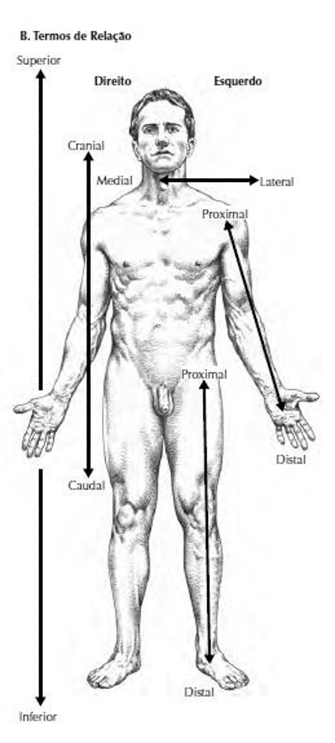
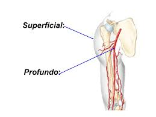
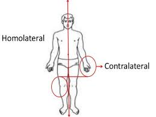

Anterior / Ventral / Frontal: na direção da frente do corpo.
Posterior / Dorsal: na direção das costas (traseiro).
Superior / Cranial: na direção da parte superior do corpo.
Inferior / Caudal: na direção da parte inferior do corpo.
Medial: mais próximo do plano sagital mediano (linha sagital mediana.
Lateral: mais afastado do plano sagital mediano (linha sagital mediana).
Mediano: exatamente sobre o eixo sagital mediano.
Intermédio: entre medial e lateral.
Médio: estrutura ou órgão interposto entre um superior e inferior, anterior e posterior e também entre proximal e distal.
Proximal: próximo da raiz do membro. Na direção do tronco.
Distal: afastado da raiz do membro. Longe do tronco ou do ponto de inserção.

Superficial: significa mais perto da superfície do corpo.
Profundo: significa mais afastado da superfície do corpo.

Homolateral / Ipsilateral: do mesmo lado do corpo ou de outra estrutura.
Contralateral: do lado oposto do corpo ou de outra estrutura.
